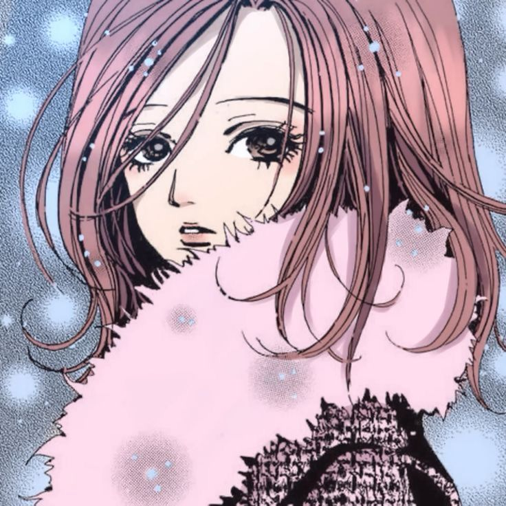
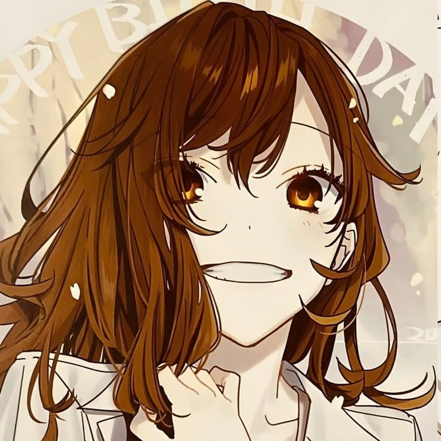
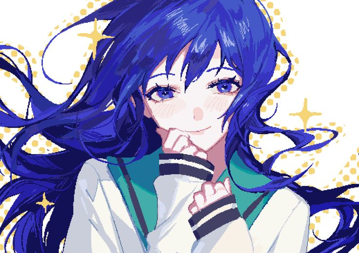
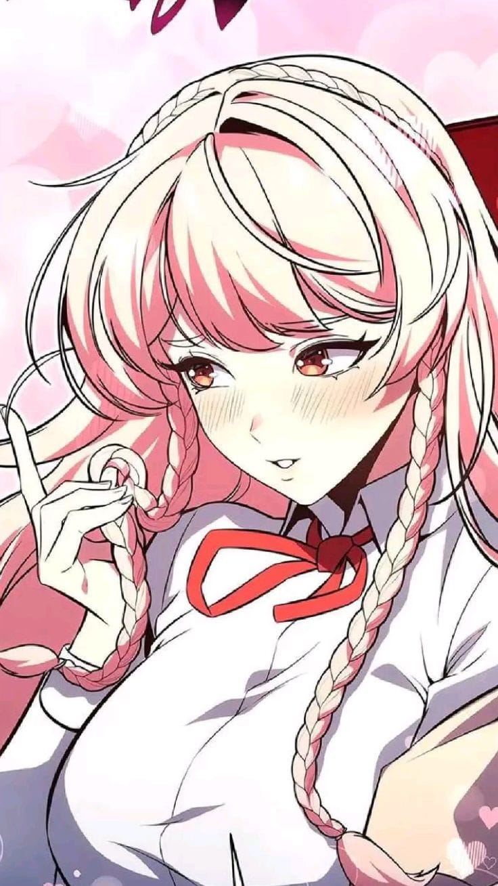
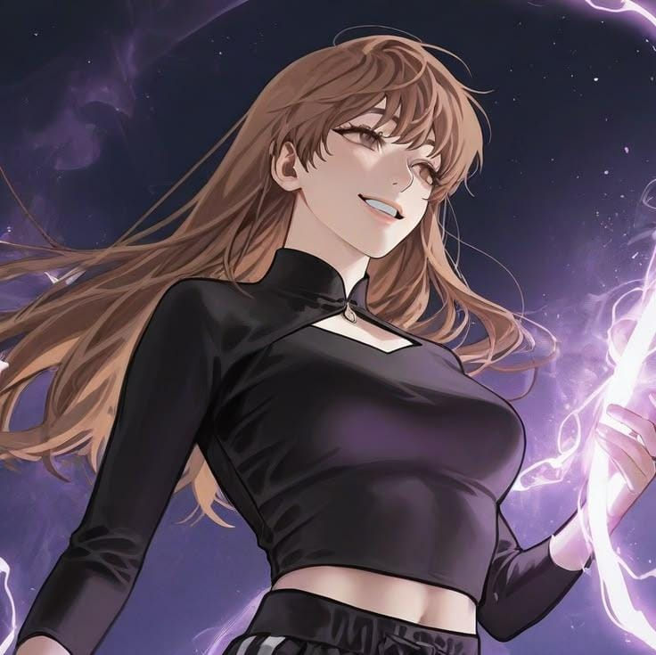

Hachi
💕
Hachi
Cof cof ya sabes el pq supongo, pero hachi es muy alegre, demasiado cariñosa, también es algo tonta jejeje
🌷
Hori
Te pareces a hori porque es alguien muy cariñosa, muy alegre y bastante no se como explicarlo pero demuestra cariño tmb molestando y con acciones

Hori

Teruhashi
🎀
Teruhashi
Es porque es muy alegre, elegante, muy bonita y muy segura de si misma y cof cof algo tsundere
🤍
Yenika
Esta también al igual que sangah, ella es alguien alegre, demasiado alegre, es muy cariñosa, también empatica, inteligente y algo despistada jejeje

Yenika

Yoo Sangah
🤍
Yoo Sangah
Creo que es con la que más te siento parecida creo, pero es alguien amable, dulce, inteligente, paciente, a veces algo bromista y alguien que demuestra como es realmente cuando tiene confianza